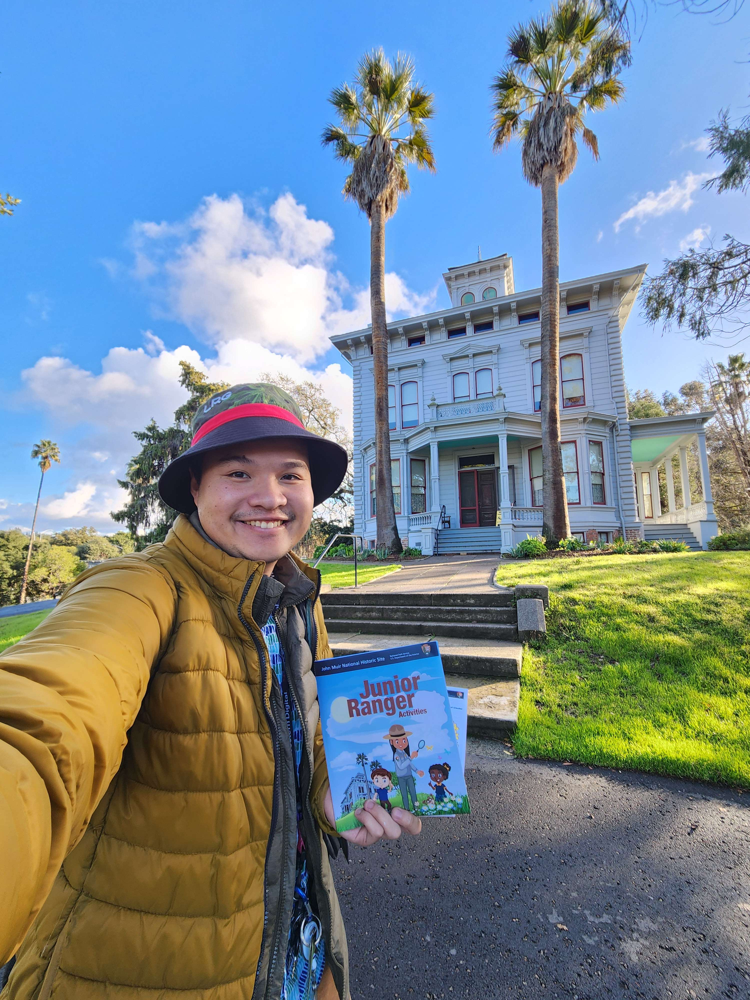
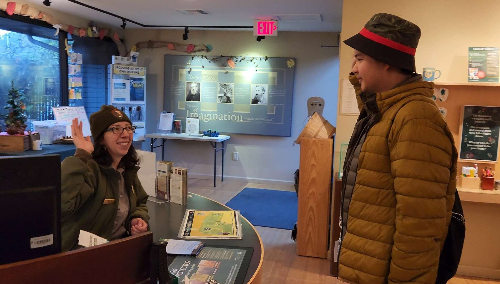
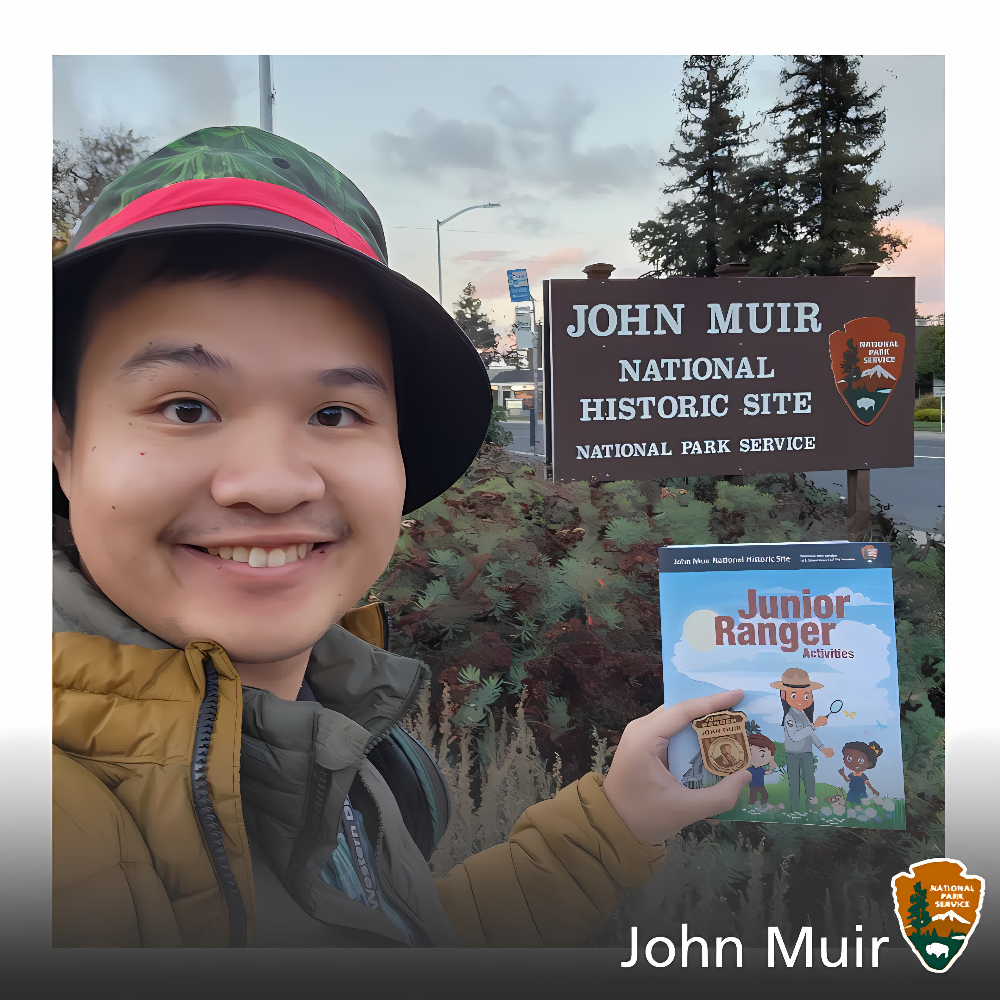

{kind=link}


Give me a one paragraph description of John Muir National Historic Site.
John Muir National Historic Site, located in Martinez, California, commemorates the life and legacy of John Muir, a pioneering naturalist, writer, and advocate for wilderness preservation. Set amidst picturesque orchards and rolling hills, the site encompasses Muir's former home, a Victorian mansion where he lived with his family from 1890 until his death in 1914. Visitors can explore the house filled with period furnishings, stroll through the surrounding orchards, and reflect upon Muir's profound influence on the conservation movement, which helped shape the ethos of America's national parks system.
I couldn't believe I didn't visit John Muir's former home any sooner! Located in Martinez, it's only an hour drive from San Jose (given without traffic). They allow for reserving tours to go to John Muir's gravesite, which my family did! Unfournately, we didn't make it to the tour ontime, and we couldn't see the graveyard, or so we thought?
Upon arriving at the site, we were greeted by the view of John Muir's historic house overviewing the roads of Matrinez. Coincidentally, it just so happens that one of the local rangers, Ranger Wendy, was available to give a private tour, even though we came late! The scenic drive to John Muir's gravesite was nice, surrounded by orchards maintained by the community. Sometimes during harvesting season, they actually allow the locals to take some of the produce home! Afterwards, we visited the home of John Muir where I went up to the watchtower to overview the whole estate. Golden Hour is so nice up there! Finally, to end the tour, my family and I walked around John Muir's estate. The pledge before leaving is amazing, as always!
To be Uploaded

